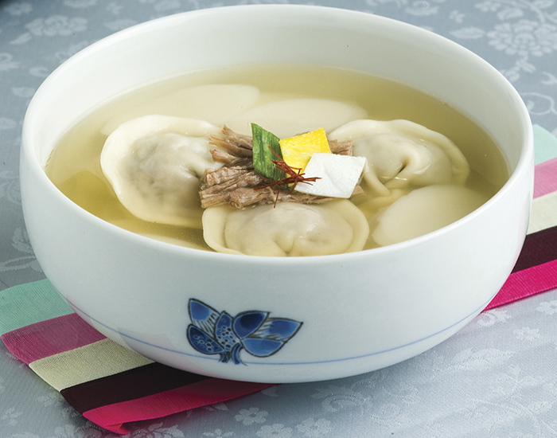

Korean Dumpling Soup with Rice Cakes

Description
This dish is very easy to make. But that isn't why I like to make this dish. It's also because once you buy the ingredients, they come in handy for other Korean dishes. It's a good introductory dish before you foray into the vast Korean cuisine.
The Korean dumpling soup with rice cakes is simply put a savory broth with typically meat dumplings and rice cakes. It is served hot and is traditionally eaten on New Year's. Eating mandu-guk, as it is called in Korean, marks the beginning of a new year and augurs another year of good health.
This is a Korean dish, so I will mostly be using Korean ingredients. You can find them at any Korean grocery store.
Ingredients
serves one; please adjust for portion size
- 500ml of water
- 4 Bibigo Large Frozen Dumplings (any dumplings are fine, but Bibigo's are tasty)
- a handful of rice cakes slices like these
- one egg (optional)
- 1 tablespoon of any fish sauce (I use anchovy sauce)
- 1 tablespoon of soy sauce
- salt and pepper (optional)
- Korean seaweed also known as gim
Steps
- Bring the 500ml of water in a pot to a boil.
- Put the fish sauce and soy sauce into the water.
- Soon after, you can put the frozen dumplings and rice cakes in.
- Cook until both the dumplings and rice cakes are soft and tender.
- Beat an egg and drizzle it in until cooked. (I just mix the egg up casually in the pot.)
- Add salt and pepper to season to your liking.
- Add the gim for garnish and voila! Meal is complete.
{kind=link}
{kind=link}